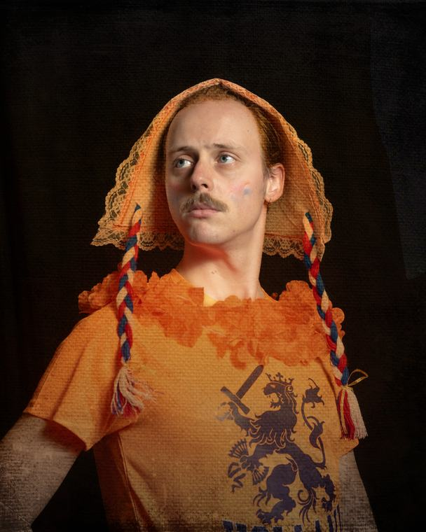

VVV – Voor Volk en Vaderland

The final part of Antiklimax's trilogy on romanticism, about its most contested legacy: nationalism.
Welcome to Steggelen. A bus used to stop here every half hour; now the little tourist office waits in vain for visitors who never come. When a municipal merger threatens to erase the village, resistance swells into a folk myth of heroic proportions. A bombastic tragicomedy about the longing for community: if it isn't the soil we were born on, what do we really have in common?
Credits
- concept & text
- Antiklimax
- direction
- Koen van Seuren
- co-production
- Grand Theatre Groningen
photo: Antiklimax